Manuale Carpe — Installazione
Manuale di installazione del software Carpe (archivio HTML migrato).
Scegli la modalita' di visualizzazione
Puoi cambiare la preferenza in qualsiasi momento dal pulsante in alto.
Ca.R.Pe.
Manuale per l’installazione
INPS – Direzione Centrale Prestazioni
--- --- ---
Via Ciro il Grande – Roma
INPS - Direzione Centrale Sistemi Informativi e Telecomunicazioni
--- --- ---
Largo Virgilio Testa – Roma
INPS - Sviluppo Applicazioni Biella
--- --- ---
Via Tripoli 14 – Biella
Introduzione
Generalità Ca.R.Pe. PC
Ca.R.Pe. PC è composto da procedure e programmi che seguono quelli del Ca.R.Pe. 98, e possono, nel loro insieme, servire una diversità di utenti fornendo:
o l’estratto conto contributivo con:
- una prima valutazione su errori o anomalie in esso contenuti,
- la verifica di validità per il calcolo della pensione;
o gli importi risultanti dai calcoli di pensione di tipo:
- retributivo,
- misto,
- contributivo;
o la possibilità di modificare i dati di calcolo per:
- correggere i dati da utilizzare,
- effettuare consulenze con calcoli di previsione, proiettando nel futuro i coefficienti e i dati di calcolo in base alla variazione annua presunta dei coefficienti ISTAT.
Generalità Ca.R.Pe. 98
Il programma Ca.R.Pe. 98 è precedente al Ca.R.Pe. PC e ha validità fino al 2001.
L’ultima versione del programma Ca.R.Pe. 98 è la 3.02.06, la quale esegue i calcoli, ancora in lire, per le pensioni con decorrenza anteriore al gennaio 2002. Tale versione è utile poiché comprende i sistemi di calcolo precedenti ai decreti d’armonizzazione dei Fondi Speciali intervenuti negli anni 1996 e 1997.
Il Ca.R.Pe. 98 può essere scaricato, in ambito INPS, da Intranet all’indirizzo www.to.inps/svabi oppure richiesto allo Sviluppo Applicazioni di Biella.
Per le parti comuni e per l’utilizzo, si può fare riferimento al presente manuale.
Utenti
Il programma Ca.R.Pe. PC può essere utilizzato da:
o liquidatori di pensioni;
o Enti di patronato;
o Servizi Online per il Cittadino attivi all’indirizzo www.inps.it.;
o aziende e associazioni;
o consulenti, sia in ambito INPS sia esterni all’Istituto;
o responsabili dei rapporti con l’utenza.
Installazione
Metodi d’installazione
Premessa
Il programma Ca.R.Pe. PC deve essere installato con le modalità di seguito descritte. Sul computer dove si installa il programma, deve essere installato anche il prodotto Run-Time RTE-NE31 (RTE32W per Ca.R.Pe. 98.).
Per l’installazione deve essere scaricata la Versione completa
del programma.
La versione completa contiene il livello di aggiornamento contraddistinto dai caratteri numerici indicati nella parte riservata alla descrizione (ad esempio Versione completa 5.04.22).
Sono distribuite sempre versioni con le ultime due cifre pari.
Installazione da file
I files di installazione possono essere richiesti ai responsabili dei rapporti con l’utenza delle Sedi INPS.
Installazione da Internet
Per l’installazione da Internet, è necessario collegarsi al sito INPS all’indirizzo www.inps.it e selezionare software, come evidenziato nelle seguenti pagine web:
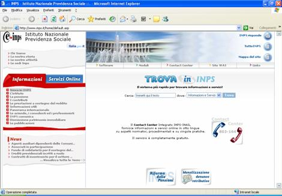
Quindi selezionare:
Procedura di installazione e dowload software
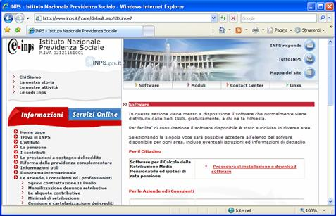
Sulla pagina successiva scendere fino a trovare i “Link” ai programmi da scaricare:
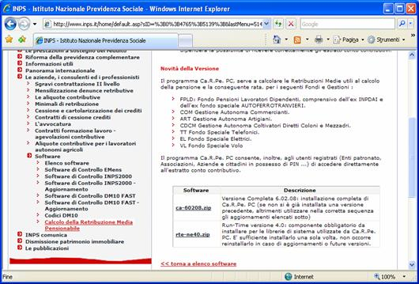
Nella tabella alla fine della pagina, è indicato il nome del programma completo da scaricare.
Cliccando il programma di installazione da scaricare, viene visualizzata la seguente finestra, sulla quale si deve selezionare “Apri”:
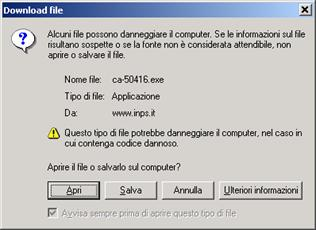
Alla fine del Download, si deve procedere seguendo gli avvertimenti del programma, come indicato in dettaglio nella sezione “Esecuzione del programma di installazione”.
Metodi di aggiornamento
Premessa
Il programma Ca.R.Pe. PC deve essere aggiornato con modalità analoghe a quelle seguite per l’installazione del programma “Versione completa”, che di seguito si descrivono.
I programmi di aggiornamento del Ca.R.Pe. PC sono contraddistinti dai caratteri cau seguiti dal numero di versione; ogni programma consente di aggiornare la versione precedente. Nella descrizione è indicata la nuova versione di aggiornamento e la versione da sostituire.
E’ indispensabile effettuare tutti gli aggiornamenti indicati con riferimento alla versione in uso. Ad esempio:
o versione in uso cau050416;
o aggiornamenti disponibili: cau050418 (aggiornamento dalla versione 5.04.16 alla 5.04.18) e cau050422 (aggiornamento dalla versione 5.04.18 alla 5.04.22).
Devono essere effettuati, in sequenza, gli aggiornamenti cau050418 e cau050422.
In alternativa, qualora gli aggiornamenti da effettuare fossero numerosi, può essere scaricata nuovamente la Versione completa.
Sono distribuiti sempre aggiornamenti con numero di versione con le ultime due cifre pari.
Aggiornamenti da file
Il file di aggiornamento, cauxxyyzz, deve essere richiesto ai responsabili dei rapporti con l’utenza delle Sedi INPS. Il file può essere inviato tramite e-mail.
Aggiornamento da Internet ed Internet
Per gli utenti connessi, alla rete interna INPS oppure ad Internet, l’aggiornamento di Ca.R.Pe. PC. è effettuato in automatico; non è previsto l’accesso ad aree di download per lo scarico di programmi di aggiornamento.
All’apertura di Ca.R.Pe. PC. viene visualizzato un messaggio che indica la presenza di aggiornamenti sui servers.
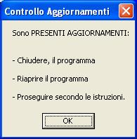
E’ quindi necessario chiudere il programma Ca.R.Pe. PC e riavviarlo subito dopo per rendere operativi gli aggiornamenti.
Riavviando il programma vengono visualizzate le consuete finestre dei programmi d’installazione. Si deve procedere in modo analogo a quanto si effettua per l’installazione del programma Ca.R.Pe. PC. (ved. sezione “Esecuzione del programma di installazione”).
Esecuzione del programma d’installazione
In fase di installazione della Versione completa oppure degli aggiornamenti, viene visualizzato il seguente pannello”
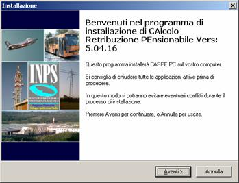
Premendo “Avanti” viene visualizzato un pannello contenente le informazioni relative alla nuova versione:
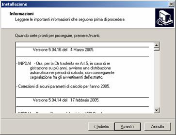
Premendo “Avanti” viene visualizzato il pannello seguente, sul quale si deve selezionare “Installa”:
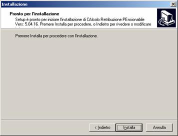
Alla fine dell’installazione del programma, viene visualizzato il pannello seguente:
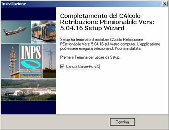
Per concludere l’installazione si deve selezionare “Termina”.
L’opzione “Lancia CarpePC” è selezionata in automatico per consentire di aprire, subito dopo l’installazione, il programma Ca.R.Pe. PC. Viene visualizzato il seguente pannello nel quale è necessario selezionare il tipo di utenza e le modalità di connessione:
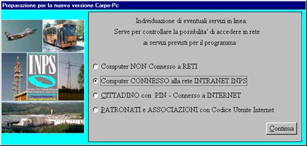
Particolare attenzione deve essere posta nella scelta delle opzioni disponibili, al fine di poter accedere alle informazioni prelevabili dagli archivi INPS. Possono essere selezionate le seguenti opzioni:
1) Computer NON Connesso a RETI: da selezionare se il computer in uso non è connesso alla rete Internet o Intranet INPS;
2) Computer CONNESSO alla rete INTRANET INPS: da selezionare dagli operatori INPS connessi a Intranet;
3) Cittadino con PIN – connesso a Internet: da selezionare dagli utenti in possesso del PIN rilasciato da INPS allo scopo di visualizzare l’estratto contributivo e simulare il calcolo della pensione;
4) PATRONATI e ASSOCIAZIONI con codice utente Internet: da selezionare dagli utenti che sono in possesso di un codice e una password rilasciata da INPS allo scopo di visualizzare l’estratto contributivo e simulare il calcolo della pensione dei loro clienti o assistiti che hanno rilasciato una delega a favore del patronato o associazione per la trattazione della pratica.
Dopo aver effettuato la scelta, si prosegue con la selezione del tasto ”Continua”. Viene visualizzato il pannello per la compilazione dei dati che verranno riportati nelle stampe:
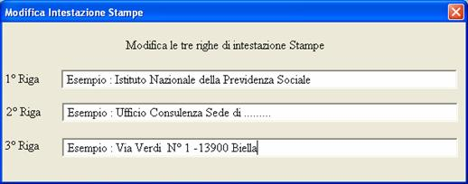
E’ necessario indicare correttamente la denominazione esatta dell’Ente o dell’Azienda che utilizza il programma.
Chiudendo il pannello, cliccando in alto a destra su “x”, l’installazione di Ca.R.Pe. PC è completata.
Per aprire Ca.R.Pe. PC, si deve cliccare due volte sull’apposita icona installata automaticamente desk-top del computer.
In seguito le sigle RTE32W ,
RTE-NE31 , RTE-NE40 ,
RTE-NE51 etc verrano indicate con RTE
FAQ (Frequently Asked Question).
1. Che cosa sono RTE32(W/O) , RTE-NE31 e RTE-NE40; sono necessari?
R- RTE™ “Run Time Environment” sono programmi della Microfocus®, e sono necessari all’esecuzione del Ca.R.Pe. 98 , Ca.R.Pe. PC ed altri programmi prodotti dall’INPS.
Sono distribuiti, nelle versioni per Windows™, dall’Istituto con i nomi RTE.
Sui computer dove già sono installate , risulta presente la directory “/RTE” ; che contiene il Run Time per i programmi. Possono in ogni caso essere presenti anche tutte e tre se, sull’elaboratore, sono state installate entrambe le versioni Ca.R.Pe., vale a dire sia la versione “98” sia la versione “PC” oppure altri programmi Come la ‘Procedura Pensioni’.
2. Dopo l’installazione dell’ RTE non succede nulla, perché?
R- RTE™, sono solo un gruppo di librerie di programmi, il cui unico scopo è di servire i programmi applicativi come Ca.R.Pe. PC, Ca.R.Pe. 98, Progetto Pensioni, ecc. Pertanto dopo la loro installazione è normale che non accada nulla in quanto la loro funzione è solo di supporto agli altri programmi.
3. Ho appena installato il Ca.R.Pe. PC e non funziona?
R- Quando al primo utilizzo di Ca.R.Pe. PC viene visualizzato un messaggio di errore, come il seguente o altri analoghi, si deve controllare se è stato installato RTE:
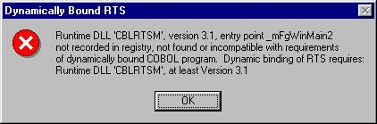
Il controllo può essere effettuato, sia accertando l’esistenza della directory c:\RTE, sia controllando, nel pannello di controllo nei programmi installati, l’esistenza di RTE.
Per correggere l’errore si deve installare o reinstallare RTE.
Manuale per l’installazione del programma Ca.R.Pe.PC
Prima Edizione
Revisione .1 Valida per Ca.R.Pe. Dalla versione 6.00.00
Totale pagine 19
martedì 20 gennaio 2009
Sviluppo Applicazioni Biella